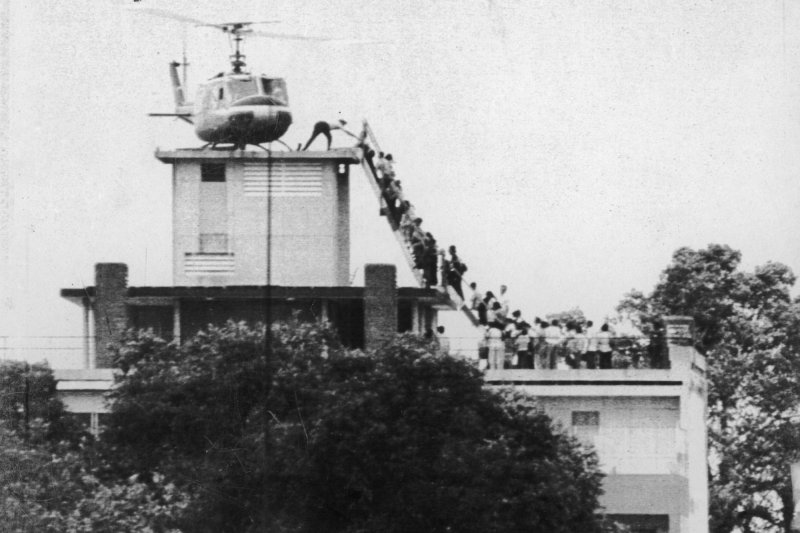

Section I
French rule, the road to partition, Diem, the coup, and Westmoreland's war
Vietnam Under French Rule, 1858–1954
- France conquered Vietnam, Laos, Cambodia piecemeal 1858–1893 — consolidated as French Indochina
- Colonial economy: rubber, rice, coal extraction for French markets; Vietnamese barred from professional and administrative roles
- Nationalist resistance never ceased — uprisings suppressed in 1900s, 1930s, 1940s
- Ho Chi Minh founded the Viet Minh in 1941 — nationalist coalition, communist-led
- WWII: Japan occupied French Indochina 1940–45; France collaborated; Viet Minh fought Japan with OSS support

French Indochina · 1887–1954 · Vietnam, Laos, Cambodia
Dien Bien Phu: The End of French Indochina
- First Indochina War 1946–1954: France vs. the Viet Minh — guerrilla war France could not win
- March–May 1954: French fortified remote valley at Dien Bien Phu to draw Viet Minh into conventional battle
- General Vo Nguyen Giap dragged artillery up jungle mountains by hand — cut off the French garrison
- French garrison surrendered May 7, 1954 — 11,721 prisoners; Geneva Accords signed two months later
- Eisenhower refused to intervene — no air strikes, no combat troops
The first time a European colonial power was defeated militarily by an Asian independence movement in the modern era

Dien Bien Phu · French garrison position · March–May 1954
The Geneva Settlement, 1954
- Temporary partition at the 17th parallel — ceasefire line, not a permanent border
- ~900,000 Catholics and anti-communists fled south; ~130,000 Viet Minh moved north
- Nationwide elections promised for 1956 — Diem refused with U.S. backing; Ho Chi Minh would have won decisively
- Elections never happened — North Vietnam used cancellation as permanent justification for armed reunification
- "Temporary" division hardened into permanent confrontation
By cancelling the elections, Saigon handed North Vietnam a permanent propaganda weapon — and a justification for armed reunification

Vietnam divided at the 17th parallel · Geneva Accords, 1954
The American Commitment, 1950–1960
Already Entangled
- By 1954 the U.S. was funding ~80% of France's war costs — already entangled, not a bystander
- MAAG advisers in Indochina from 1950 — training Vietnamese national forces
- Domino theory: South Vietnam's fall risked Laos, Cambodia, Thailand, and beyond
- Eisenhower drew a firm line: ~700 advisers and aid — no combat troops, no rescue of the French at Dien Bien Phu
The Insurgency Takes Hold, 1954–1960
North Vietnam's Strategy
- Hanoi organized stay-behind Viet Minh into the National Liberation Front (NLF) — the Viet Cong
- NLF tactics: assassination of village officials, tax collection, parallel governance — by 1960 large areas outside Saigon's control
- Kennedy escalated to ~16,000 advisers and authorized counterinsurgency programs
- Then made the decision that made everything worse: the 1963 coup against Diem
Who Were We Actually Fighting on the Ground?
The Real Enemy, 1965–1968
- Primary enemy: Viet Cong — South Vietnamese communists living among the civilian population, not Northern invaders
- No uniforms, no insignia — same black peasant clothing as civilians; farmer by day, fighter by night
- Guerrilla tactics: hit-and-run, booby traps, mines, assassinations — then disappeared back into villages
- This reality drove the logic of free-fire zones, search-and-destroy, and — at its worst — My Lai
Ngo Dinh Diem: The Revisionist Case
- Standard portrait: autocratic, unpopular Catholic mandarin who alienated the Buddhist majority
- Archival evidence: capable and patriotic leader who built a functioning government from nothing after 1954
- Defied American advisers on multiple occasions — not a puppet
- Strategic Hamlet program showed genuine counterinsurgency promise

Ngo Dinh Diem · President of South Vietnam, 1955–1963 · Public Domain
The Strategic Hamlet Program, 1962–1963
The Concept
- Modeled on the British New Villages program (Malayan Emergency 1948–60) — separate the population from the insurgency
- Designed by Sir Robert Thompson; run operationally by Ngo Dinh Nhu — extending Saigon's governance into countryside
- American pressure drove unrealistic construction targets — paper hamlets, inadequate security; tunnel networks undermined perimeters
- Program collapsed immediately after Diem and Nhu were assassinated — Abrams's pacification after 1968 was the same concept, better implemented
The Buddhist Crisis — Why the Coup Happened
- June 11, 1963: Buddhist monk Thích Quảng Đức burned himself to death — protesting the Huế Vesak shootings of May 8
- Seven more self-immolations followed — images dominated American press for months
- Diem's sister-in-law called the immolations "barbecues" — devastating in U.S. media
- American journalists convinced Washington that Diem had lost the population
- Kennedy advisers concluded Diem was a political liability — began signaling officers a change of government would not be opposed

Thích Quảng Đức · Saigon · June 11, 1963 · Photo: Malcolm Browne / AP
The Coup of November 1, 1963
- South Vietnamese officers overthrew and murdered Diem and Nhu with explicit U.S. encouragement — State Dept and CIA
- Kennedy reportedly shocked by the murders — he authorized the coup, not the killings; Kennedy assassinated three weeks later
- 11 different governments in South Vietnam 1963–1966 — Viet Cong expanded, Strategic Hamlet collapsed
- Directly caused the escalation that followed — Moyar calls it the single most consequential decision of the entire war
Dean Rusk on the Coup
as quoted in Mark Moyar, Triumph Forsaken (2006)
Westmoreland's Strategy, 1965–1968
- General Westmoreland — MACV commander 1964–1968; applied conventional doctrine to an unconventional war
- Large-unit search-and-destroy operations — find, fix, destroy enemy main-force units
- Attrition logic: kill the enemy faster than it can be replaced
- Won virtually every major engagement — but failed to produce strategic progress
- McNamara's metrics: body counts and kill ratios rewarded favorable statistics, not strategic objectives

Gen. William Westmoreland · MACV Commander, 1964–1968 · Public Domain
Section II
A military disaster misread as defeat — and the war that was actually won
Tet 1968: Two Realities
- January 30–31, 1968: North Vietnam and Viet Cong attacked 100+ cities and towns simultaneously
- Expected popular uprising did not materialize
- Viet Cong suffered 40,000–58,000 killed — never recovered
- South Vietnamese forces performed creditably; cleared attackers within weeks
- North Vietnam's political objective — collapse Saigon — failed completely
- TV cameras filmed chaos of first days — Embassy compound breach, Saigon street fighting
- Cronkite declared a "stalemate" — factually wrong at the moment he said it
- Johnson: "If I've lost Cronkite, I've lost Middle America"
The Most Trusted Man in America
CBS Evening News editorial, February 27, 1968

Walter Cronkite · CBS News · 1966 · Public Domain
1968: The Year the War Came Home
The Political Unraveling
- Feb 27: Cronkite declares stalemate — Mar 31: Johnson announces he will not seek re-election
- Apr 4: King assassinated — riots in 110 cities — Jun 5: RFK assassinated night he wins California primary
- Aug: DNC Chicago — police beat protesters on national television
- Nixon wins November 1968 on "peace with honor" — his answer: Vietnamization
Vietnamization: Building a War to Hand Off
The Policy
- ARVN massively expanded to 1.1M+ troops, re-equipped with M-16s, modern artillery, retrained under American advisers
- Troop withdrawals: 543,000 (1968) → 156,000 (1971) → 49,000 (1972) → Paris Peace Accords Jan 1973
- Not abandonment — a transfer of responsibility that depended on continued American material support to function
- Nixon privately promised Thieu U.S. would respond to ceasefire violations — Watergate made those promises impossible to honor
General Abrams: A Different War
- General Creighton Abrams — Westmoreland's replacement as MACV commander, June 1968
- "One war" concept: military operations, pacification, and Vietnamization integrated into single strategy
- Central objective: population security — not body counts
- Hamlet Evaluation System reoriented; correlated with measurable Viet Cong infrastructure decline

Gen. Creighton Abrams · MACV Commander, 1968–1972 · Public Domain
The 1972 Easter Offensive
- March 30, 1972: North Vietnam launched its largest conventional assault — 13–14 divisions, Soviet tanks and artillery
- ARVN initially retreated, then rallied — U.S. B-52 strikes (Linebacker) and naval gunfire proved decisive
- NVA suffered 100,000+ casualties; offensive repelled
- Proof of concept: a properly supported ARVN could defeat a massive conventional assault — the 1975 collapse was political, not military
Section III
How images shaped what Americans believed — and what they got wrong
Photography and War: The Persistent Problem
The Promise
- Alexander Gardner's Antietam photographs (1862) — first time Americans saw war's human cost in near-real-time
- Gardner staged several compositions — moved bodies for better effect — yet photography established itself as war's truth-telling medium
- The template: emotionally authentic images producing political conclusions that outrun the facts
- Vietnam accelerated this — television brought the war into American homes nightly, with the same structural problem
Vietnam Changes the Equation
What Was New
- Vietnam was the first war brought nightly into American homes by television — three networks reaching tens of millions
- Television rewarded emotional immediacy over analytical depth — images reached audiences before context could follow
- A burning village is compelling television; 500 enemy killed and a hamlet secured is not
- The medium's apparent objectivity made its distortions invisible — not dishonesty, a structural problem
Photograph 1: The Burning Monk, 1963
- June 11, 1963: Buddhist monk Thích Quảng Đức burned himself to death at a Saigon intersection
- AP photographer Malcolm Browne — photo on front pages worldwide within hours
- Response to May 8 Huế shootings: government forces killed nine Buddhists for flying religious flags Catholic officials had flown freely
- Revisionist context: Buddhist leadership included communist sympathizers who understood media coverage would destabilize Diem
Thích Quảng Đức · June 11, 1963 · Photo: Malcolm Browne / AP · Pulitzer Prize 1963
Photograph 2: The Loan Execution, 1968
- February 1, 1968 — second day of Tet Offensive
- South Vietnamese Police Chief Brig. Gen. Nguyen Ngoc Loan executing a Viet Cong officer on a Saigon street
- AP photographer Eddie Adams — Pulitzer Prize 1970
- What the frame excluded: the executed man had just murdered a police officer and his family members
- Adams later: "The general killed the Viet Cong; I killed the general with my camera"

General Nguyen Ngoc Loan · Saigon · February 1, 1968 · Photo: Eddie Adams / AP · Pulitzer Prize 1969
Photograph 3: The Napalm Photograph, 1972
- June 8, 1972 — South Vietnamese Air Force napalm strike on Trảng Bàng
- Nine-year-old Kim Phúc running from napalmed village — Nick Ut, AP, Pulitzer Prize 1973
- Strike was ordered by South Vietnamese forces — largely absent from media coverage
- Kim Phúc survived; Ut drove her to hospital

Kim Phúc · Tràng Bàng · June 8, 1972 · Photo: Nick Ut / AP · Pulitzer Prize 1973
Photograph 4: The Fall of Saigon, 1975
- April 29, 1975 — Hubert van Es / UPI
- Widely but incorrectly identified as U.S. Embassy roof — actually a CIA apartment building
- What the frame excluded: the congressional aid cutoff that degraded ARVN capacity before the final offensive
- North Vietnam launched final offensive explicitly expecting no U.S. airpower response

Saigon evacuation · April 29, 1975 · Photo: Hubert van Es / UPI
What the Frame Left Out
What All Four Had in Common
- All four photographs were real — none staged; all taken by skilled, ethical journalists
- All produced political conclusions the events they depicted did not actually support
- Television rewarded emotional immediacy — images reached audiences before context; the medium's objectivity made its distortions invisible
- The question is never "Is this photograph true?" — it is "What did this frame leave out, and what false conclusion did that absence produce?"
Closing Synthesis
The anti-war movement • Giap's strategy • The aid cutoff • What the fall cost
The Anti-Vietnam War Movement
- 1965–1969: Campus protest movement grew from thousands to millions — SDS, draft card burnings, teach-ins, marches on Washington
- April 4, 1967: Martin Luther King Jr. publicly opposes the war — links it to racial injustice and drain on the Great Society
- May 4, 1970: National Guard kills four students at Kent State — over 450 universities shut down; Congress bars further Cambodia operations
- Vietnam Veterans Against the War: decorated veterans threw medals on Capitol steps — "How do you ask a man to be the last man to die for a mistake?"
- Nixon's "silent majority" pushed back — polling showed majority war support among non-protesters throughout
The Enemy's Own Assessment
as cited in Lewis Sorley, A Better War (1999)
The Congressional Aid Cutoff
- 1973: Case-Church Amendment prohibits further U.S. military operations in Southeast Asia after August 15
- FY 1973: Military aid to South Vietnam — $2.27 billion
- FY 1975: Military aid cut to $700 million — ammunition rationed; artillery fired at fractions of required rates; aircraft grounded for lack of parts
- March 1975: North Vietnam launches final offensive — explicitly expecting no U.S. airpower response
- April 30, 1975: Saigon falls
What Followed the Fall of Saigon
- South Vietnam: Saigon renamed Ho Chi Minh City; 200,000–400,000 died in "re-education camps"; hundreds of thousands imprisoned for years
- Laos: fell to Pathet Lao within months — the domino fell
- Cambodia: Khmer Rouge took power — killed 1.5–2 million people, 20–25% of Cambodia's total population, 1975–1979
- The domino theory: not paranoid fantasy — it was accurate prediction
Military Defeat or Political Failure?
The lesson Vietnam teaches is not that counterinsurgency is unwinnable
It is that democratic societies can lose winnable wars when political will collapses before military objectives are achieved
Final Discussion
South Vietnam fell not because its military was defeated in the field, but because Congress withdrew the material support that made its operations sustainable.
Does this change the lesson Vietnam teaches — and does it change how you evaluate American commitments to allies?